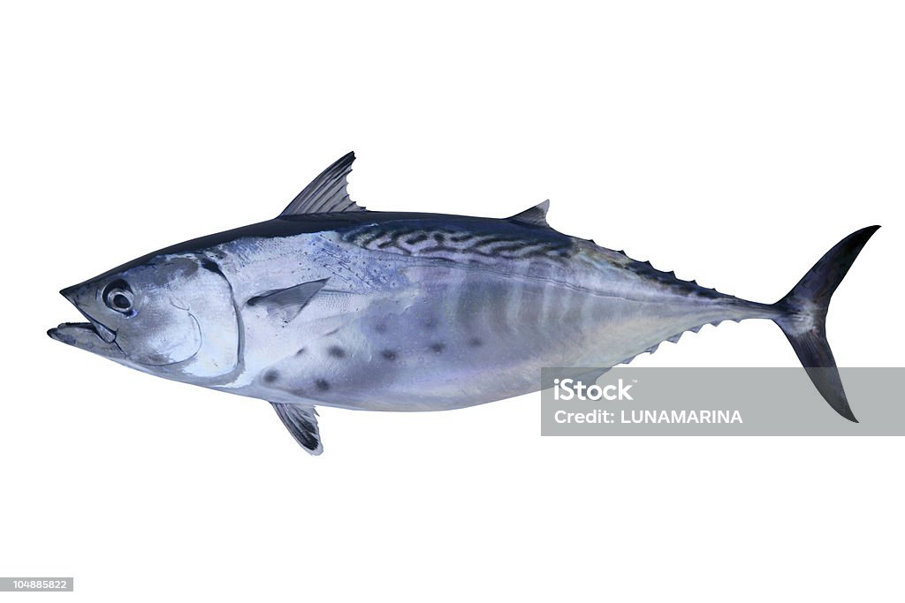

<div class="card-container">
  <mat-card class="card">
    <mat-card-header>
      <div mat-card-avatar class="card-image"></div>
      <mat-card-title>{{ salmon.name }}</mat-card-title>
      <mat-card-subtitle>{{ salmon.color }}</mat-card-subtitle>
    </mat-card-header>
    
    <mat-card-content>
      <p>
        The Shiba Inu is the smallest of the six original and distinct spitz
        breeds of dog from Japan. A small, agile dog that copes very well with
        mountainous terrain, the Shiba Inu was originally bred for hunting.
      </p>
    </mat-card-content>
    <mat-card-actions>
      <button mat-button>LIKE</button>
      <button mat-button>SHARE</button>
    </mat-card-actions>
  </mat-card>
</div>
